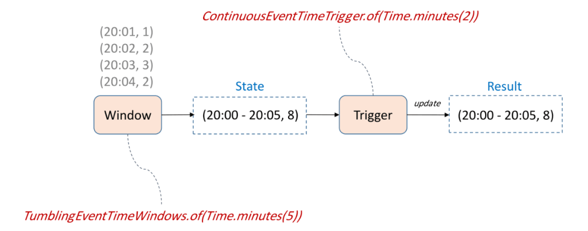
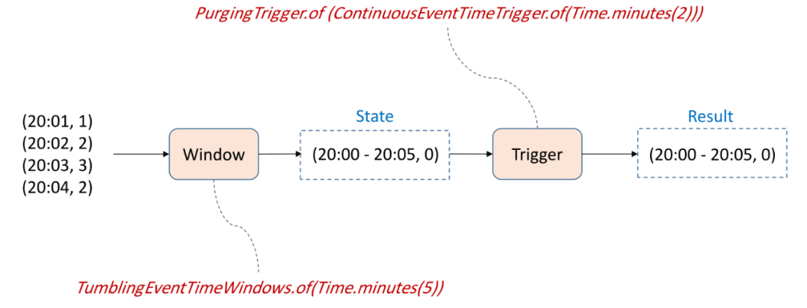

新事物的学习思路
当我们碰到一项新的技术时，我们应该怎样去学习并应用它呢？在我个人看来，有这样一个学习的路径，应该把它拆成应用和实现两块。首先应该从它的应用入手，然后再深入它的实现。
应用主要分为三个部分，首先应该了解它的应用场景，比如窗口的一些使用场景。然后，进一步地我们去了解它的编程接口，最后再深入了解它的一些抽象概念。因为一个框架或一项技术，肯定有它的编程接口和抽象概念来组成它的编程模型。我们可以通过查看文档的方式来熟悉它的应用。在对应用这三个部分有了初步的了解后，我们就可以通过阅读代码的方式去了解它的一些实现了。
实现部分也分三个阶段，首先从工作流程开始，可以通过 API 层面不断的下钻来了解它的工作流程。接下来是它整体的设计模式，通常对一些框架来说，如果能构建一个比较成熟的生态，一定是在设计模式上有一些独特的地方，使其有一个比较好的扩展性。最后是它的数据结构和算法，因为为了能够处理海量数据并达到高性能，它的数据结构和算法一定有独到之处。我们可以做些深入了解。
以上大概是我们学习的一个路径。从实现的角度可以反哺到应用上来，通常在应用当中，刚接触某个概念的时候会有一些疑惑。当我们对实现有一些了解之后，应用中的这些疑惑就会迎刃而解。
实时数仓的典型架构

第一种最简单的架构，ODS层的Kafka数据经过Flink的ETL处理之后写入DW层的Kafka，再通过Flink聚合写入ADS层的Mysql中做一个实时报表展现
缺点: 由于MySql存储数据有限，所以聚合的时间粒度不能太细，维度组合不能太多
第二种架构相对于第一种引入了OLAP引擎，同时也不用Kafka来做聚合，通过Druid的Rollup来做聚合
缺点: Druid是一个查询引擎，不是计算引擎。当数据量巨大时，每天上百亿、千亿的数据会加剧Druid的压力第三种在第二种的基础上，采用Flink来聚合写入Kafka，最终写入Druid
缺点: 当窗口粒度比较长，输出结果会有延迟第四种在第三种的基础上，Flink做轻度的聚合，Druid的Rollup做汇总，Druid可以实时看到Flink聚合的结果
Flink Window在实时数据处理中的应用场景

聚合统计: 从Kafka读取数据，根据不同维度做1分钟或者5分钟聚合，然后将结果写入MySql或者Druid中
记录合并: 对多个Kafka数据源在一定的窗口范围内做合并，结果写入ES。例如：用户的一些行为数据，针对每个用户，可以对其行为做一定的合并，减少下游的数据量，降低ES的写入压力。
双流join: 针对双流join，如果全量join的话，内存开销会很大。所以考虑基于Window来做join
Window抽象概念

TimestampAssigner: 时间戳分配器，如果使用EventTime时间语义，需要TimestampAssigner告诉Flink框架元素的哪个字段是事件时间，用于后面的窗口计算
KeySelector：Key选择器，告诉Flink框架做聚合的维度
Window Assigner: 窗口分配器，将数据分配到相应的窗口
Window State: 存储窗口内的元素，如果有AggregateFunction存储的是增量聚合的结果
AggregateFunction(可选): 增量聚合函数，做窗口的增量计算，减轻State的存储压力
Trigger：触发器，确定窗口的触发时间
Evictor(可选): 驱逐器，在窗口函数之前或者之后对满足条件的数据过滤
WindowFunction: 窗口函数，对窗口内的数据进行计算
Collector: 收集器，将窗口的结果发送到下游
Window编程接口
stream
.assignTimestampsAndWatermarks(…) <- TimestampAssigner
.keyBy(...) <- KeySelector
.window(...) <- WindowAssigner
[.trigger(...)] <- Trigger
[.evictor(...)] <- Evictor
.reduce/aggregate/process() <- Aggregate/Window functionWindow Assigner

主要有三种Window Assigner:
- Time Window
- Count Window
- Session Window
Window Trigger
Trigger用来确定窗口合适触发，Flink内置了一些Trigger:
Trigger示例
假如我们定义一个5分钟的基于 EventTime 的滚动窗口，定义一个每2分触发计算的 Trigger，有4条数据事件时间分别是20:01、20:02、20:03、20:04，对应的值分别是1、2、3、2，我们要对值做 Sum 操作。
初始时，State 和 Result 中的值都为0。
当第一条数据在20:01进入窗口时，State 的值为1，此时还没有到达 Trigger 的触发时间。
第二条数据在20:02进入窗口，State 中的值为1+2=3，此时达到2分钟满足 Trigger 的触发条件，所以 Result 输出结果为3。
第三条数据在20:03进入窗口，State 中的值为3+3 = 6，此时未达到 Trigger 触发条件，没有结果输出。

第四条数据在20:04进入窗口，State中的值更新为6+2=8，此时又到了2分钟达到了 Trigger 触发时间，所以输出结果为8。如果我们把结果输出到支持 update 的存储，比如 MySQL，那么结果值就由之前的3更新成了8。
如果Result只能Append

如果 Result 不支持 update 操作，只能 append 的话，则会输出2条记录，在此基础上再做计算处理就会引起错误。
这样就需要 PurgingTrigger 来处理上面的问题。
PurgingTrigger 的应用

和上面的示例一样，唯一的不同是在 ContinuousEventTimeTrigger 外面包装了一个 PurgingTrigger，其作用是在 ContinuousEventTimeTrigger 触发窗口计算之后将窗口的 State 中的数据清除。
前两条数据先后于20:01和20:02进入窗口，此时 State 中的值更新为3，同时到了Trigger的触发时间，输出结果为3。
由于 PurgingTrigger 的作用，State 中的数据会被清除。
当后两条数据进入窗口之后，State 重新从0开始累计并更新为5，输出结果为5。
由于结果输出是 append 模式，会输出3和5两条数据，然后再做 Sum 也能得到正确的结果。
上面就是 PurgingTrigger 的一个简单的示例，它还支持很多有趣的玩法。
DeltaTrigger 的应用
有这样一个车辆区间测试的需求，车辆每分钟上报当前位置与车速，每行进10公里，计算区间内最高车速。
首先需要考虑的是如何来划分窗口，它不是一个时间的窗口，也不是一个基于数量的窗口。用传统的窗口实现比较困难，这种情况下我们考虑使用 DeltaTrigger 来实现。

如何提取时间戳和生成水印，以及选择聚合维度就不赘述了。这个场景不是传统意义上的时间窗口或数量窗口，可以创建一个 GlobalWindow，所有数据都在一个窗口中，我们通过定义一个 DeltaTrigger，并设定一个阈值，这里是10000（米）。每个元素和上次触发计算的元素比较是否达到设定的阈值，这里比较的是每个元素上报的位置，如果达到了10000（米），那么当前元素和上一个触发计算的元素之间的所有元素落在同一个窗口里计算，然后可以通过 Max 聚合计算出最大的车速
Window Evictor
TimeEvictor 的应用
基于上面的区间测速的场景，每行进10公里，计算区间内最近15分钟最高车速。
实现上只是在前面基础上增加了 Evictor 的使用，过滤掉窗口最后15分钟之前的数据。
Window Function
Flink 内置的 WindowFunction 有两种类型，第一种是 AggregateFunction，它是高级别的抽象，主要用来做增量聚合，每来一条元素都做一次聚合，这样状态里只需要存最新的聚合值。
- 优点: 增量聚合，实现简单。
- 缺点: 输出只有一个聚合值，使用场景比较局限。
第二种是 ProcessWindowFunction，它是低级别的抽象用来做全量聚合，每来一条元素都存在状态里面，只有当窗口触发计算时才会调用这个函数。
- 优点: 可以获取到窗口内所有数据的迭代器，实现起来比较灵活；可以获取到聚合的 Key 以及可以从上下文 Context 中获取窗口的相关信息。
- 缺点: 需要存储窗口内的全量数据，State 的压力较大
同时我们可以把这两种方式结合起来使用，通过 AggregateFunction 做增量聚合，减少中间状态的压力。通过 ProcessWindowFunction 来输出我们想要的信息，比如聚合的 Key 以及窗口的信息。
mappedSource.keyBy((KeySelector<Tuple3<String, Integer, Long>, String>) stringIntegerLongTuple3 -> stringIntegerLongTuple3.f0).timeWindow(Time.seconds(10))
.reduce(new ReduceFunction<Tuple3<String, Integer, Long>>() {
@Override
public Tuple3<String, Integer, Long> reduce(Tuple3<String, Integer, Long> stringIntegerLongTuple3, Tuple3<String, Integer, Long> t1) throws Exception {
return new Tuple3<>(stringIntegerLongTuple3.f0, stringIntegerLongTuple3.f1 + t1.f1, stringIntegerLongTuple3.f2 + t1.f2);
}
//reduce做完增量聚合后将结果传到ProcessWindowFunction操作状态数据或者窗口信息
}, new ProcessWindowFunction<Tuple3<String, Integer, Long>, String, String, TimeWindow>() {
@Override
public void process(String key, Context context, Iterable<Tuple3<String, Integer, Long>> iterable, Collector<String> collector) throws Exception {
//当ReduceFunction对整体的窗口数据做完聚合后会将结果放入iterable中这里可以获取到
Iterator<Tuple3<String, Integer, Long>> iterator = iterable.iterator();
TimeWindow window = context.window();
long start = window.getStart();
long end = window.getEnd();
while(iterator.hasNext()){
Tuple3<String, Integer, Long> next = iterator.next();
collector.collect(String.format("key:%s, window start:%s, window end:%s, name:%s, score:%s",key,start,end,next.f0,next.f1));
}
}
});工作流程和实现机制
只是对原文章进行了一下记录和补充，原文章出处:https://mp.weixin.qq.com/s/xZTGeFaaVW4VDDVgp3jwqg
本博客所有文章除特别声明外，均采用 CC BY-SA 3.0协议 。转载请注明出处！